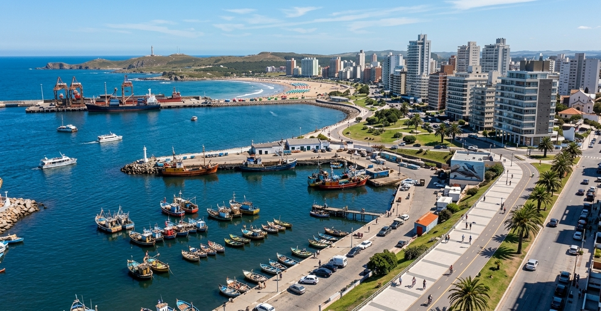
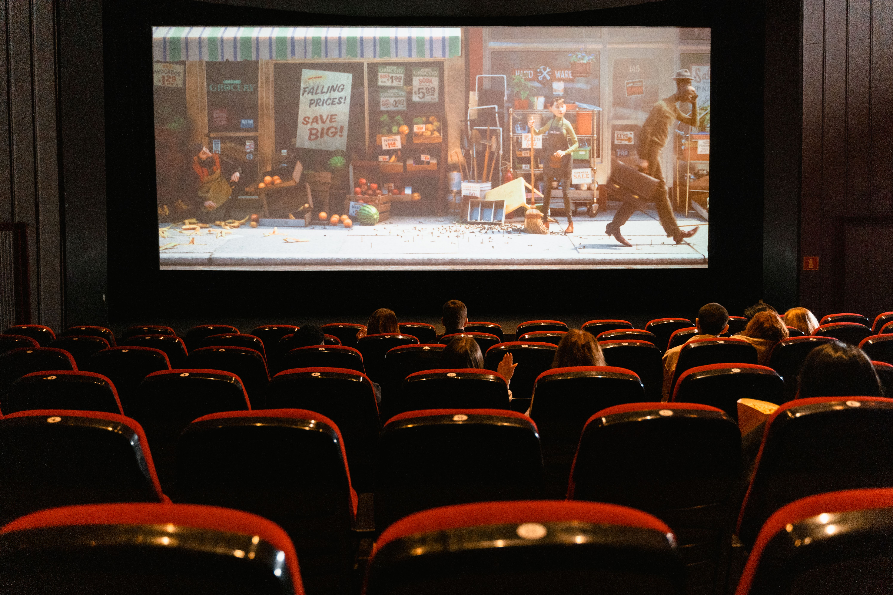
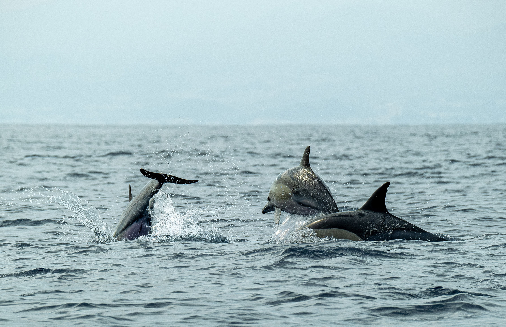
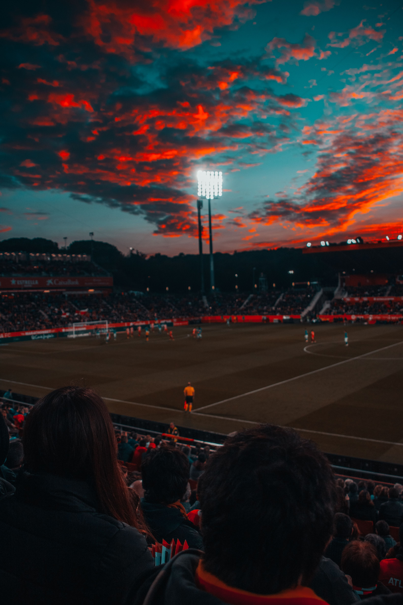

Bahia de las Toninas.
Un lugar privilegiado para observar toninas overas en su hábitat natural.
Conocer másPuerto Nuevo es una ciudad balnearia ubicada en la costa atlántica de la Provincia de Buenos Aires. Fundada en 1874, combina playas, tradición pesquera, cultura y naturaleza.
La ciudad es reconocida por sus toninas overas, su puerto pesquero y la pasión por Puerto Nuevo Fútbol Club.
Conocer la ciudad
Un lugar privilegiado para observar toninas overas en su hábitat natural.
Conocer más


Celebración realizada en marzo para homenajear la tradición pesquera de Puerto Nuevo.

En diciembre comienza oficialmente la temporada de verano con actividades para turistas.

Festival cultural que reúne películas, realizadores y actividades relacionadas con el cine durante noviembre.

Durante primavera y verano se realizan excursiones guiadas desde el puerto para observar toninas overas.
Puerto Nuevo Fútbol Club, conocido como "Los Marineros", es uno de los símbolos deportivos de la ciudad desde su fundación en 1905.
Los días de partido, las banderas del club llenan las calles del centro y el barrio El Puerto.
